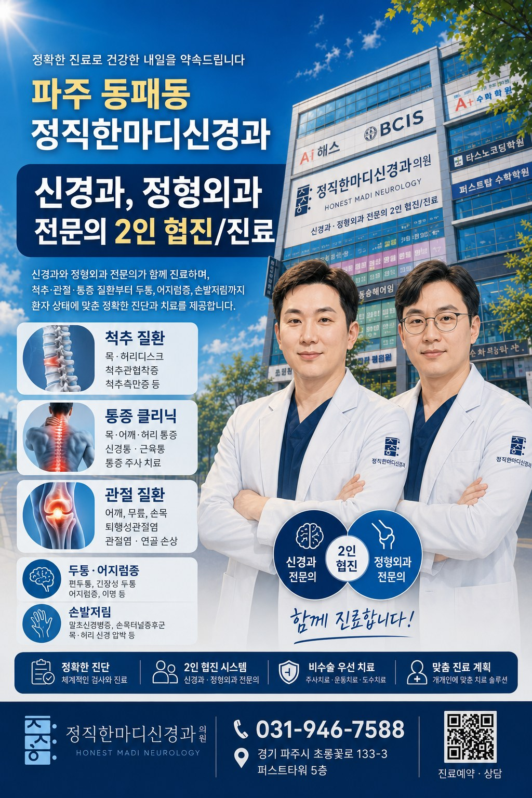

CLINIC GUIDE
처음 방문하셔도 진료 흐름을 이해할 수 있게 안내합니다
정직한마디신경과의원은 척추·관절·통증 질환과 신경 증상을 함께 확인하며, 필요한 검사와 치료를 단계적으로 설명합니다.

우리클리닉 핵심 안내
환자가 가장 궁금해하는 의료진, 진료시간, 공간, 장비 정보를 한눈에 확인할 수 있도록 구성했습니다.
정직한마디신경과의원은 척추·관절·통증 질환과 신경 증상을 함께 확인하며, 필요한 검사와 치료를 단계적으로 설명합니다.

환자가 가장 궁금해하는 의료진, 진료시간, 공간, 장비 정보를 한눈에 확인할 수 있도록 구성했습니다.